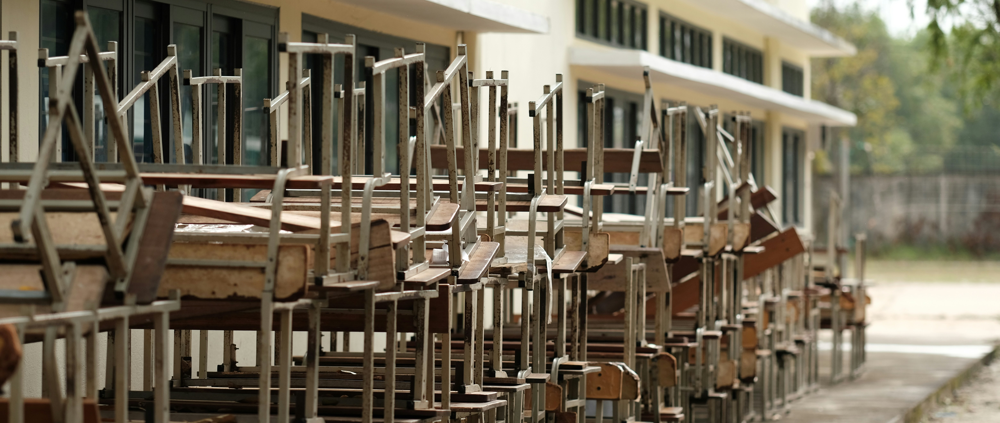
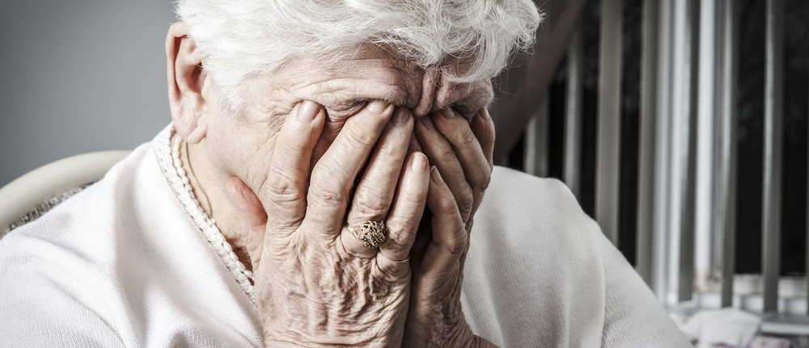

Nurses and their Struggles
In March of 2023, the International Council of Nurses (ICN) released a report that called out a worldwide shortage of nurses in the medical field that could lead to a global health emergency. This was caused by the pandemic which greatly effected the nursing profession by increasing burnout and reducing access to care. The pandemic combined with the lack of staffing increase the stress of workers and drastically decreased their satisfaction leading many to leave the profession propegating the understaffing issue. In October 2023, more than a quarter of all nurses had plans to leave the profession. It was observed that nurses employed in this setting had the lowest levels of job satisfaction. It doesn't help that in this century most of the established Nurses in the United States are nearing their retirement as well. According to the National Sample Survey of Registered Nurses in 2022, 23% of Registered Nurses planned to retire in the next 5 years.
In April 2022, a nursing workforce analysis was conducted in health affairs that from 2020 to 2021 had a 100,000 decrease in Registered Nurses, the biggest drop in the past four decades. According to a Health Workforce Analysis by the HRSA (Health Resources and Services Administration) in November 2022,there was a projected shortage of ~79,000 full-time Registered Nurses by 2025 and ~64,000 full-time Registered Nurses by 2030. The Bureau also projects ~193,000 openings for Registered Nurses each year until 2032.
The system is not helping with midigating these problems at the moment as in 2022 in a Nurse Salary Research Report, 29% of nurses across all license types considering leaving in 2021, compared with 11% in 2020. The biggest reason that stopped them from leaving was the higher pay.
The issues these nurses pointed out as a problem were:
- lack of support
- No work-life balance
- Unreasonable workload
The ten states with the largest projected nursing shortage in 2035 are:

The Bottleneck of the Nursing Industry
When we look at the vacant Nursing positions compared to the students enrolled in Nursing school enrollment we will see that the the projected graduating nurses will not meet the demands for Registered Nurses and Advance Practice Registered Nurses. In 2023 there was a reported from of 3.1% for Nurses pursing their PhD and 0.9% for nurses pursing their Masters. These trends raise major concerns on nursing schools and their ability to meet the projected demand for students as they lack the open capcity for nurse and research faculty. According to reports from 2023 to 2024 for enrollment and graduation it was estimated that ~66,000 of qualified applications were turned away from nursing programs due to:
- Insufficient number of faculty members
- Lack of clinical sites to train at
- Lack of classroom space
- Shortage of Clinical Preceptors
- Lack of funds
